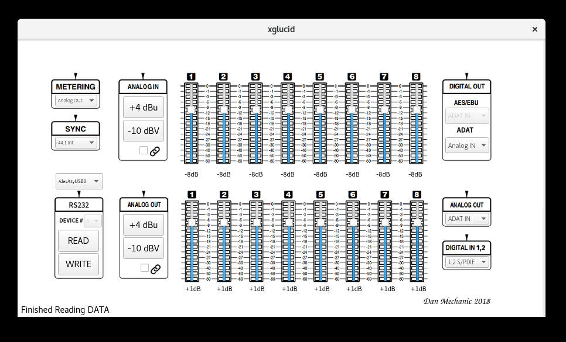

xglucid GUI Interface¶
Note
xglucid requires Python 3, PyQt5 and PySerial
Note
The user who is running glucid must be able to read and write to whichever serial device you are using; consult your operating system documentation.
Note
xglucid assumes you are using /dev/ttyUSB0 a linux computer and a usb serial interface. OSX users a recommended to try /dev/tty.usbserial for a usb to serial interface. Windows users a recommended to try COM1.
Note
Be sure to connect your serial interface before starting xglucid
First:
- Power Off your Lucid 8824
- Flip DIP Switch 1 on your Lucid 8824 to down (remote) We recommend setting ALL DIP switches down and leaving them down for as long as you wish to keep your unit configured via software
- Connect a 9 pin Serial connector from the Lucid 8824 to your computer
- Power On your Lucid 8824
Launch xglucid¶
Know what Serial Port you are Using¶
The default is /dev/ttyUSB0¶
By default, glucid assumes you are using /dev/ttyUSB0 Use the pulldown menu to the left to select your Serial interface
Select READ¶
This will read all values from your ADA8824 and enable the options with the values currently stored on your unit.
Write all Values wtih WRITE¶
If you change any values, select WRITE to write them to your ADA8824.
Select READ to confirm your settings were written successfully.